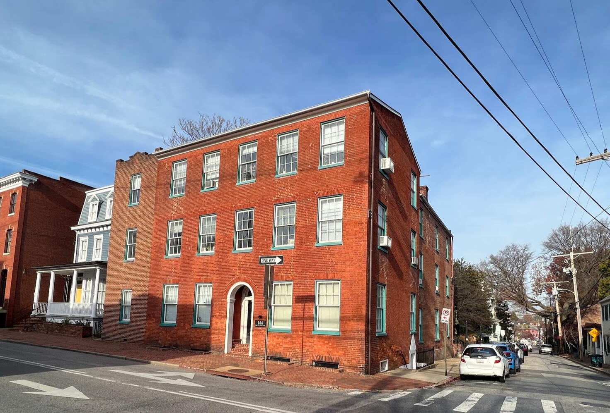
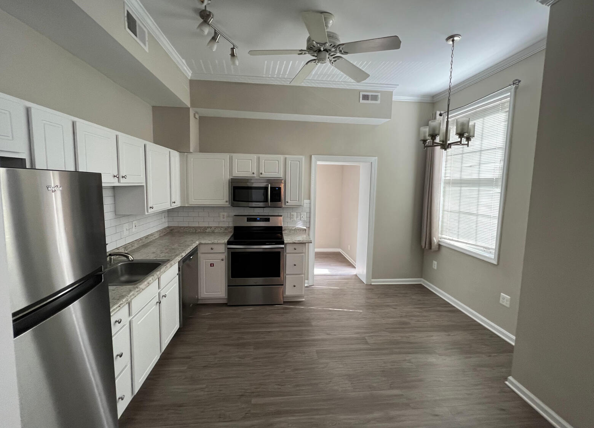
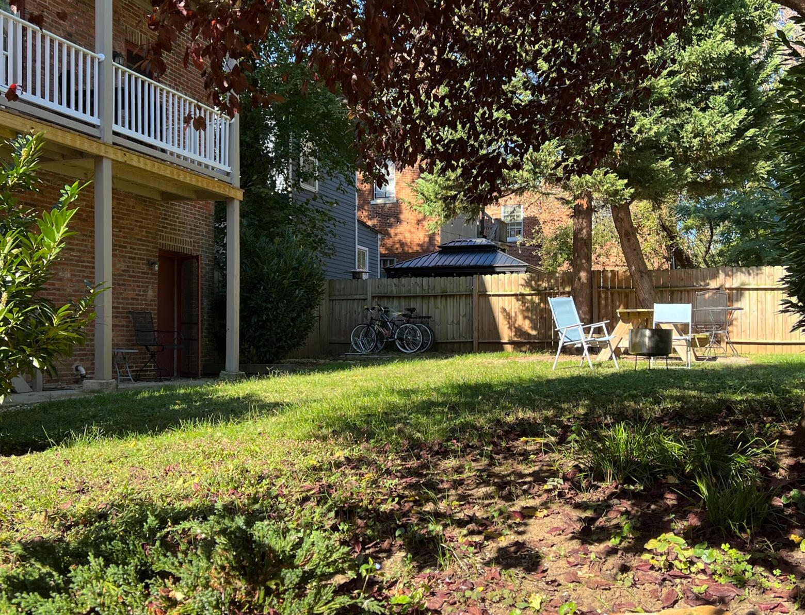
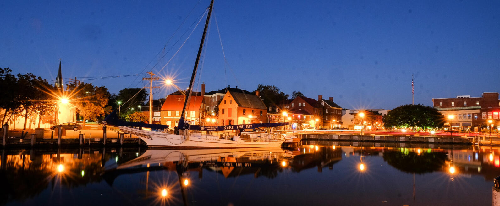
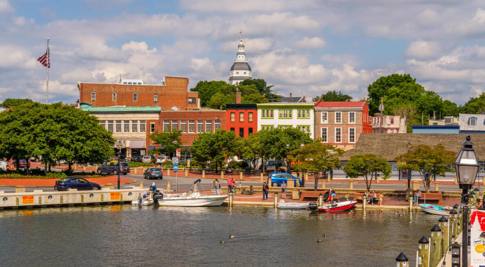

144 Duke of Gloucester Street · Annapolis, Maryland
A Landmark Address,
One Block from the Water
Nine apartments in a circa-1805 brick landmark, in the heart of the Colonial Annapolis Historic District.
144 Duke of Gloucester has stood one block from Spa Creek for more than two centuries. Its residences pair the proportions of the original building — high ceilings, tall windows, thick brick walls — with fully modern kitchens, baths, and laundry. Few addresses in Annapolis offer both; fewer still with a private garden.

The Residences
Renovated for the Way You Live Now
Each residence is individual — no two floor plans repeat — but all share the same standard of finish and the same address a short walk from everything downtown.
- Residences
- Eight one-bedrooms and one two-bedroom, roughly 600 to 1,100 square feet
- Kitchens
- Stainless steel appliances and modern finishes
- Laundry
- Washer and dryer in every residence
- Light
- High ceilings and oversized sash windows
- Utilities
- Water, sewer, and trash included
- Parking
- City resident permit available with lease
- Outdoors
- Private garden with grill, picnic table, and bike racks
- Leases
- Twelve-month terms; longer terms considered

The Building
Two Centuries on Duke of Gloucester Street
Duke of Gloucester Street was drawn into Annapolis’s original town plan of 1695, and the brick building at No. 144 has anchored its corner since the early nineteenth century. It stands today within the Colonial Annapolis Historic District, a National Historic Landmark — red brick, seafoam-trimmed sash windows, and an arched entry that has welcomed Annapolitans for generations.
The Private Garden
Behind the building, a fenced garden shaded by mature trees offers grilling, dining, and bicycle storage — a quiet retreat after a day on the water.
A private garden, one block from the harbor — a rarity in downtown Annapolis.

The Neighborhood
Everything Annapolis, on Foot
Coffee on Main Street, sailboats on Spa Creek, oysters at the City Dock. With a Walk Score of 95 — a “Walker’s Paradise” — daily life at 144 Duke does not require a car.
Watch the Wednesday Night Races finish at the Spa Creek Bridge, browse the Sailboat Show each October, and catch the Blue Angels over the Severn during Commissioning Week. Eastport’s restaurant row is just across the drawbridge. When you do drive, Washington and Baltimore are each about 45 minutes away, BWI about 30 — with weekday express buses to Washington from town.
- Main Street
- 2 min
- Spa Creek Harbor
- 2 min
- Annapolis Yacht Club
- 3 min
- City Dock & Ego Alley
- 4 min
- Market House
- 5 min
- Maryland State House
- 8 min
- U.S. Naval Academy, Gate 1
- 9 min
Walking times are approximate.

Availability & Inquiries
Inquire About a Residence
With only nine residences, availability is limited and apartments lease quickly. Tell us what you are looking for and we will be in touch — typically within one business day.
Current openings, when available, are listed on Apartments.com, where applications are also processed.
Or write to us directly:
manager@144duke.com